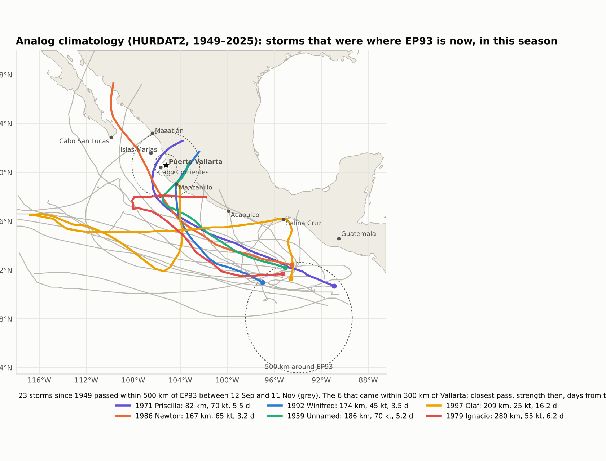
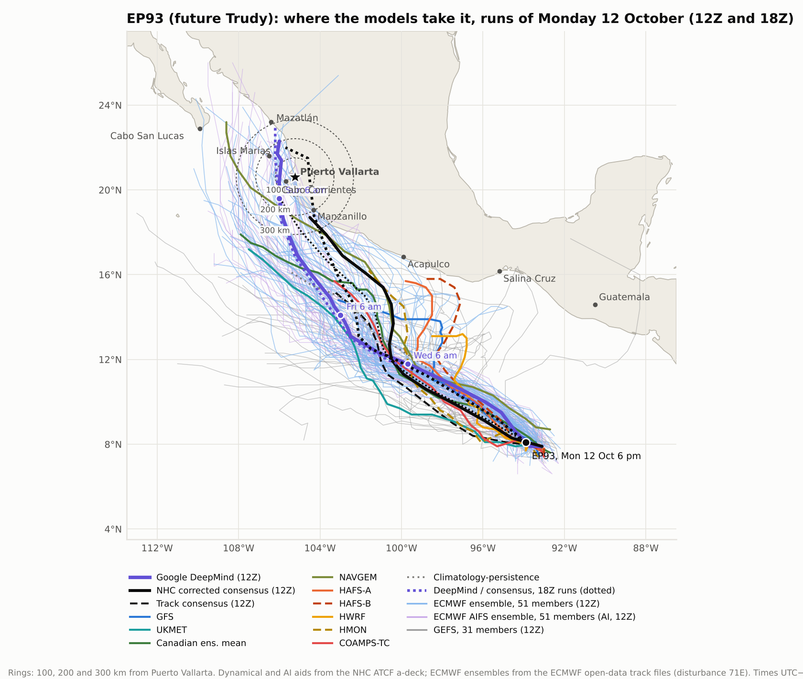
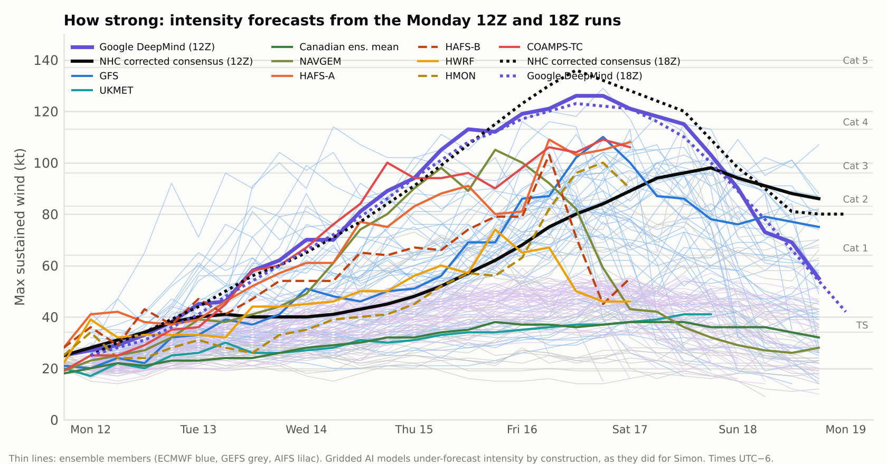
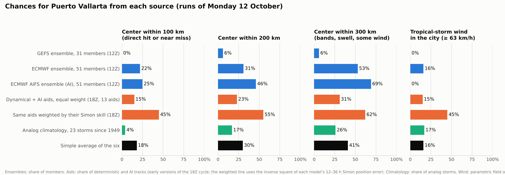
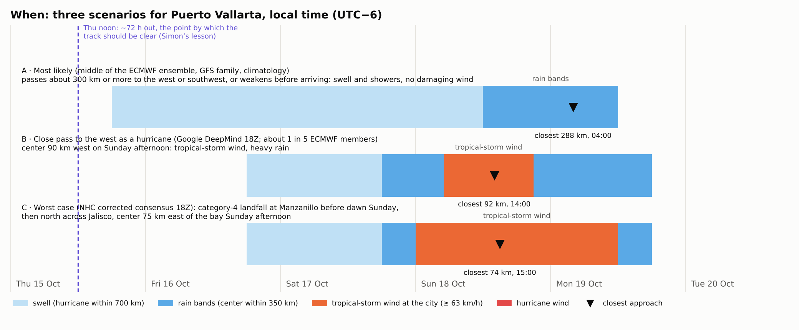

Analog climatology from 77 seasons, the Monday model runs (ECMWF, GFS, UKMET, the US hurricane models, Google DeepMind, the NHC consensus aids and three ensembles) weighted by what each did with Simon, and the resulting most-likely case, worst case and timing for D Terrace in Amapas, Casa Francisca in Emiliano Zapata and the house in El Pitillal.
At 6 pm Monday the disturbance was a broad low near 8.1N 93.9W, roughly 1,900 km southeast of Puerto Vallarta, with 25-kt winds and a pressure of 1008 mb, moving west-northwest at about 10 mph. The 5 pm PDT outlook: "Showers and thunderstorms are beginning to show signs of organization in association with a broad area of low pressure located several hundred miles south-southwest of the coast of Guatemala. This system is gradually becoming better defined, and environmental conditions are forecast to be conducive for further development. A tropical depression or tropical storm is expected to form well south of southern Mexico later tonight or tomorrow." Formation chance through 48 hours and 7 days: near 100 percent.
It is unusually far south and east for a mid-October storm, over warm water, and every track model takes it west-northwest for two to three days before the question of a turn north arises. The ECMWF tracks it as disturbance 71E in its own track files, which is what let the two ECMWF ensembles be read here.
HURDAT2 for the eastern North Pacific, 1949–2025. Of the 23 storms that passed within 500 km of EP93's position between 12 September and 11 November, 6 came within 300 km of Puerto Vallarta, 4 within 200 km and 1 within 100 km (Priscilla, 1971: 82 km at 70 kt, five and a half days after its analog point). 16 of the 23 became hurricanes and 11 became major hurricanes. The closest passes to Vallarta came 3.2–6.2 days after the analog point, which from Monday evening means Thursday to Sunday; the models are slower than climatology because they keep EP93 on a long westward leg first. Most analogs ended in Central America or Oaxaca (9), Michoacán–Colima (5) or Sinaloa (6). Tightening the analog circle to 300 km leaves 8 storms, none of which came within 300 km of Vallarta (Roslyn 1986 came closest at 302 km).

| Storm | Analog point | Closest, km | When | kt then | Peak kt | Region of closest pass |
|---|---|---|---|---|---|---|
| 1971 Priscilla | 10.7N 90.9W, 1971-10-06 | 82 | 1971-10-12 (+5.5 d) | 70 | 110 | Nayarit |
| 1986 Newton | 12.4N 94.5W, 1986-09-18 | 167 | 1986-09-21 (+3.2 d) | 65 | 75 | Sinaloa |
| 1992 Winifred | 11.0N 97.0W, 1992-10-06 | 174 | 1992-10-10 (+3.5 d) | 45 | 100 | Michoacán / Colima |
| 1959 Unnamed | 12.2N 95.1W, 1959-10-22 | 186 | 1959-10-27 (+5.2 d) | 70 | 120 | Michoacán / Colima |
| 1997 Olaf | 11.3N 94.6W, 1997-09-26 | 209 | 1997-10-12 (+16.2 d) | 25 | 60 | Michoacán / Colima |
| 1979 Ignacio | 11.7N 95.3W, 1979-10-23 | 280 | 1979-10-30 (+6.2 d) | 55 | 125 | Jalisco (Bahía de Banderas) |
| 1986 Roslyn | 10.2N 92.7W, 1986-10-15 | 302 | 1986-10-22 (+6.5 d) | 65 | 125 | Sinaloa |
| 1997 Pauline | 12.0N 95.5W, 1997-10-06 | 317 | 1997-10-10 (+4.2 d) | 30 | 115 | Michoacán / Colima |

Three ensembles, three answers. The GEFS (31 members, 12Z) has 6% of members within 300 km of Vallarta and a median closest pass of 778 km; it keeps EP93 weak (median peak 52 kt). The ECMWF ensemble (51 members, 12Z) has 53% within 300 km, 31% within 200 km and 22% within 100 km, with 6 members making landfall on Bahía de Banderas itself, 2 in Michoacán–Colima and 2 in Sinaloa; its median peak is 96 kt, a major hurricane, but by the time the close members reach the bay most have weakened (median 42 kt at closest approach), which is why only 16% of members give tropical-storm wind in the city. The ECMWF AIFS ensemble (AI, 51 members) is the most Vallarta-leaning on track (69% within 300 km, 25% within 100 km) and the weakest on intensity (median peak 52 kt), the same under-forecasting the gridded AI models showed throughout Simon.
The deterministic and AI aids of the 12Z cycle (late versions) and 18Z cycle (early versions, the ones the NHC forecaster sees) are tabulated in the appendix. Bearings of the close ECMWF passes cluster between south-southwest and west (SSW to W): the storm passes offshore and turns north, with the city on its right-hand, onshore-wind side. That geometry puts the Amapas terrace, which faces the bay, on the exposed side.


The honest statement is the spread, not the average. The GFS-based sources sit at 0–6%, the European and AI sources at 50–70%, climatology at 26%. The Simon-weighted line is the highest because it concentrates on the two aids that were best for Simon and that happen to be the two closest to Vallarta today; it is one reading, not a verdict. On an ordinary bifurcated six-day forecast, an outcome that half the credible guidance gives and half denies deserves something near one in three, and that is where the 300-km average lands. For the three outcomes that matter to a resident:
| Outcome | Six-source average | Lowest source | Highest source | Read it as |
|---|---|---|---|---|
| Center within 300 km: swell, rain bands, gusty showers, a day or two of disruption | 41% | 6% | 69% | 41% |
| Center within 200 km: tropical-storm conditions possible on the exposed shore, heavy rain likely | 30% | 6% | 55% | about 1 in 3 |
| Center within 100 km: the hurricane itself is a possibility for the bay | 18% | 0% | 45% | about 1 in 6 |
| Tropical-storm wind (≥ 63 km/h sustained) in the city | 16% | 0% | 45% | about 1 in 6 |
| Hurricane wind (≥ 119 km/h sustained) in the city | < 5% | 0% | 0% | no track or member gives it today; the worst case below comes close only on the exposed terrace |
Each scenario is one real model track, run through the same parametric wind field and exposure factors as the Simon graphics, with an R-CLIPER-type rain estimate along the track (no terrain enhancement; the Sierra behind the city can double the total on the slopes). Scenario A is the ECMWF member nearest the ensemble's median closest pass; B is Google DeepMind's 18Z line; C is the NHC corrected consensus 18Z line, the worst coherent case any credible aid gives today. Times are Vallarta time.
| A · Most likely passes 288 km to the W at Mon 19 Oct 04:00 as a category 2 (92 kt); about half of all sources |
B · Close pass to the west center 92 km W at Sun 18 Oct 14:00, category 2 (85 kt) after a 123-kt peak; roughly 1 in 5 of ECMWF members, DeepMind's own line |
C · Worst case category-4 landfall at Manzanillo Sun 18 Oct 02:00 (116 kt), center 74 km E of the bay at Sun 18 Oct 15:00; roughly 1 in 10 | |
|---|---|---|---|
| Swell on the coast | Thu 15 Oct 18:00 → Mon 19 Oct noon | Fri 16 Oct 18:00 → Mon 19 Oct noon | Fri 16 Oct 18:00 → Mon 19 Oct 18:00 |
| Rain bands over the bay | Sun 18 Oct noon → Mon 19 Oct noon | Sat 17 Oct 18:00 → Mon 19 Oct 18:00 | Sat 17 Oct 18:00 → Mon 19 Oct 18:00 |
| Tropical-storm wind in the city | — | Sun 18 Oct 05:00 → Sun 18 Oct 21:00 | Sun 18 Oct midnight → Mon 19 Oct noon |
| Rain, storm total (city, before terrain) | 24 mm | 133 mm | 178 mm |
| D Terrace, Amapas, 8th floor | 37 km/h, gusts 52 Mon 19 Oct midnight, wind from the SE | 72 km/h, gusts 100 Sun 18 Oct noon, wind from the SE | 100 km/h, gusts 125 Sun 18 Oct 14:00, wind from the NNW |
| Casa Francisca, Emiliano Zapata, 3rd floor | 32 km/h, gusts 47 Mon 19 Oct midnight, wind from the SE | 62 km/h, gusts 90 Sun 18 Oct noon, wind from the SE | 71 km/h, gusts 103 Sun 18 Oct 14:00, wind from the NNW |
| El Pitillal house, street level | 29 km/h, gusts 42 Mon 19 Oct midnight, wind from the SE | 55 km/h, gusts 80 Sun 18 Oct noon, wind from the ESE | 65 km/h, gusts 94 Sun 18 Oct 14:00, wind from the NNW |
| What it means | A windy, wet Sunday night. Big surf on the south shore and the Malecón; secure balcony items at Amapas as a courtesy, nothing more. Pitillal: puddles, not flood. | Tropical-storm conditions for most of Sunday. Amapas: wind off the bay at the terrace, salt spray, loose items become projectiles; stay off the balcony. Casa Francisca: sheltered by the hill and the buildings, gusts to 90, flickering power. Pitillal: 133 mm or more on the Pitillal basin puts the river up and the low streets under water; move the car before Saturday night. | Near-hurricane gusts at the terrace from Sunday morning through the night; a day and a half of tropical-storm wind; power and water out for days in parts of the city; 178 mm plus terrain on the Cuale and Pitillal catchments, both rivers in flood, landslides on the Amapas and Conchas Chinas slopes. Pitillal: leave for higher ground on Saturday. This is the case the Hurricane Watch, if one comes on Friday, would be about. |

NHC advisory 22A (Monday 6 pm Vallarta time): Simon is a category-2 hurricane with 85-kt winds about 125 km west of Cabo Corrientes, drifting west-northwest at 6 km/h. It is forecast to move slowly away from the bay, then turn northeast and reach the Sinaloa coast as a weakening hurricane around Thursday night or Friday. A Hurricane Warning is in effect for the Islas Marías and a Hurricane Watch from Cabo Corrientes to Bahía Tempehuaya. Puerto Vallarta's wind probabilities are below the 3% display threshold; Mazatlán's 34-kt cumulative probability is 54%. Simon will be inland over Sinaloa, and gone, before Trudy's window opens; the swell it leaves on the Jalisco coast (4–5 m per SMN aviso 40) will have eased by Wednesday, before Trudy's own swell arrives.
| Aid | Closest, km | Side | When (local) | kt then | Peak kt | Amapas km/h | E. Zapata | Pitillal | Rain mm | Landfall |
|---|---|---|---|---|---|---|---|---|---|---|
| Google DeepMind | 77 | W | Sun 18 14:00 | 84 | 126 | 76 | 66 | 59 | 133 | — |
| NHC corrected consensus | 226 | SSE | Mon 19 06:00 | 86 | 98 | 42 | 37 | 33 | 19 | — |
| Track consensus | 635 | SSE | Sat 17 18:00 | — | — | 0 | 0 | 0 | 0 | — |
| GFS | 684 | SSE | Mon 19 06:00 | 75 | 110 | 11 | 10 | 9 | 0 | — |
| UKMET | 448 | SSW | Sun 18 06:00 | 41 | 41 | 20 | 17 | 15 | 6 | — |
| Canadian ens. mean | 403 | SSW | Sun 18 18:00 | 36 | 38 | 12 | 10 | 9 | 17 | — |
| NAVGEM | 177 | SW | Sat 17 18:00 | 42 | 105 | 45 | 39 | 34 | 60 | — |
| GEFS mean | 680 | S | Mon 19 06:00 | 35 | 46 | 7 | 6 | 5 | 1 | — |
| HAFS-A | 792 | SE | Sat 17 noon | 108 | 109 | 12 | 11 | 10 | 0 | — |
| HAFS-B | 856 | SE | Sat 17 noon | 55 | 103 | 11 | 9 | 8 | 0 | — |
| HWRF | 1100 | SE | Sat 17 noon | 46 | 74 | 10 | 8 | 8 | 0 | — |
| HMON | 622 | SE | Sat 17 noon | 90 | 100 | 13 | 11 | 10 | 0 | — |
| COAMPS-TC | 583 | SSE | Sat 17 noon | 106 | 109 | 21 | 18 | 16 | 1 | — |
| Climatology-persistence | 502 | S | Sat 17 06:00 | — | — | 0 | 0 | 0 | 0 | — |
| Aid | Closest, km | Side | When (local) | kt then | Peak kt | Amapas km/h | E. Zapata | Pitillal | Rain mm | Landfall |
|---|---|---|---|---|---|---|---|---|---|---|
| Google DeepMind (early) | 92 | W | Sun 18 14:00 | 85 | 123 | 72 | 62 | 55 | 133 | — |
| NHC corrected consensus | 74 | E | Sun 18 15:00 | 94 | 136 | 100 | 71 | 65 | 178 | Michoacán / Colima, Sun 18 02:00, 116 kt |
| Track consensus | 121 | SW | Mon 19 noon | — | — | 0 | 0 | 0 | 0 | — |
| GFS (early) | 618 | SSE | Mon 19 noon | 72 | 98 | 13 | 11 | 10 | 1 | — |
| UKMET (early) | 397 | SW | Sun 18 noon | 47 | 47 | 22 | 19 | 17 | 10 | — |
| Canadian ens. mean (early) | 426 | SSW | Sun 18 16:00 | 40 | 42 | 12 | 11 | 10 | 19 | — |
| NAVGEM (early) | 276 | SW | Sat 17 19:00 | 44 | 99 | 19 | 17 | 15 | 39 | — |
| GEFS mean (early) | 683 | S | Mon 19 11:00 | 37 | 47 | 7 | 6 | 6 | 2 | — |
| HAFS-A (early) | 641 | SE | Sun 18 midnight | 112 | 112 | 11 | 10 | 9 | 0 | — |
| HAFS-B (early) | 715 | SE | Sun 18 midnight | 38 | 83 | 10 | 8 | 8 | 1 | — |
| HWRF (early) | 1016 | SE | Sun 18 midnight | 37 | 65 | 9 | 8 | 7 | 0 | — |
| HMON (early) | 419 | SE | Sun 18 midnight | 90 | 90 | 15 | 13 | 12 | 2 | — |
| COAMPS-TC (early) | 444 | SSE | Sun 18 midnight | 106 | 106 | 22 | 19 | 17 | 2 | — |
| Climatology-persistence | 540 | SSW | Sat 17 noon | — | — | 0 | 0 | 0 | 0 | — |
Consensus aids carry no intensity (TVCN, CLP5) or no radii (HCCA); their building winds use climatological radii. "kt then" is the model's intensity at closest approach.
| Aid | Simon 12–36 h error, km | Weight |
|---|---|---|
| Google DeepMind (early) | 33 | 25% |
| NHC corrected consensus | 38 | 19% |
| Track consensus | 51 | 11% |
| GEFS mean (early) | 57 | 8% |
| NAVGEM (early) | 64 | 7% |
| GFS (early) | 67 | 6% |
| HWRF (early) | 68 | 6% |
| Canadian ens. mean (early) | 69 | 6% |
| UKMET (early) | 83 | 4% |
| HMON (early) | 99 | 3% |
| HAFS-A (early) | 117 | 2% |
| COAMPS-TC (early) | 129 | 2% |
| HAFS-B (early) | 169 | 1% |
| GEFS | ECMWF | AIFS | |
|---|---|---|---|
| Members | 31 | 51 | 48 |
| Within 100 / 200 / 300 km | 0 / 6 / 6% | 22 / 31 / 53% | 25 / 46 / 69% |
| Median closest pass, km | 778 | 288 | 213 |
| Median peak intensity, kt | 52 | 96 | 52 |
| Tropical-storm wind in the city | 0% | 16% | 0% |
| Landfall on Bahía de Banderas | 0 | 6 | 8 |
| Landfall Michoacán–Colima / Nayarit / Sinaloa | 0 / 0 / 0 | 2 / 0 / 2 | 2 / 1 / 5 |
| No landfall within the run | 28 | 41 | 32 |
| Median city rain, mm (all / 90th pct) | 1 / 4 | 26 / 71 | 28 / 73 |